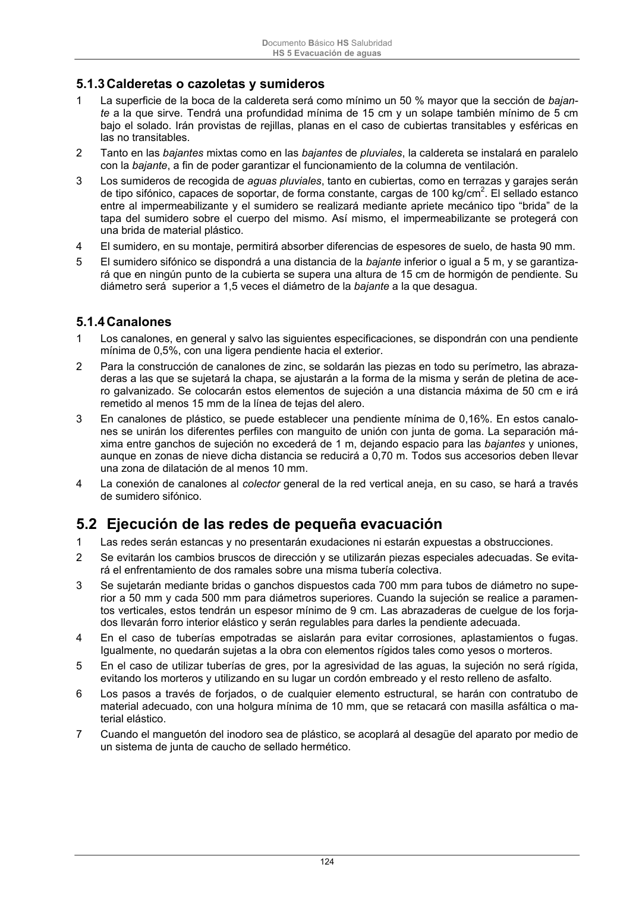

DB-HS · Fragmento de PDF p124 · versión 2022-06-14 · capa oficial
Formatos: JSON compacto · Markdown · PDF fuente
Ámbito del documento · texto del ámbito · documento y tablas
ID técnico a0278 · PDF pág. 124 · jerarquía no validada por persona · no es capítulo: sin_linea_de_encabezado · padre: raíz · literal original en el contenido: «5.1.3 Calderetas o cazoletas y sumideros»
5.1.3 Calderetas o cazoletas y sumideros 1 La superficie de la boca de la caldereta será como mínimo un 50 % mayor que la sección de bajan- te a la que sirve. Tendrá una profundidad mínima de 15 cm y un solape también mínimo de 5 cm bajo el solado. Irán provistas de rejillas, planas en el caso de cubiertas transitables y esféricas en las no transitables. 2 Tanto en las bajantes mixtas como en las bajantes de pluviales, la caldereta se instalará en paralelo con la bajante, a fin de poder garantizar el funcionamiento de la columna de ventilación. 3 Los sumideros de recogida de aguas pluviales, tanto en cubiertas, como en terrazas y garajes serán de tipo sifónico, capaces de soportar, de forma constante, cargas de 100 kg/cm2. El sellado estanco entre al impermeabilizante y el sumidero se realizará mediante apriete mecánico tipo “brida” de la tapa del sumidero sobre el cuerpo del mismo. Así mismo, el impermeabilizante se protegerá con una brida de material plástico. 4 El sumidero, en su montaje, permitirá absorber diferencias de espesores de suelo, de hasta 90 mm. 5 El sumidero sifónico se dispondrá a una distancia de la bajante inferior o igual a 5 m, y se garantiza- rá que en ningún punto de la cubierta se supera una altura de 15 cm de hormigón de pendiente. Su diámetro será superior a 1,5 veces el diámetro de la bajante a la que desagua.

PDF fuente redistribuible: copia fiel enlazada en esta página (SHA256 verificado).